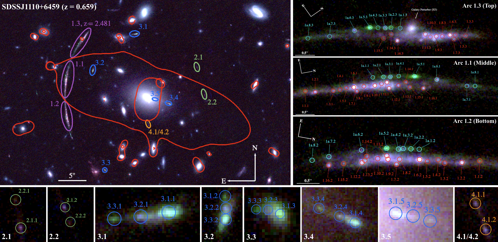
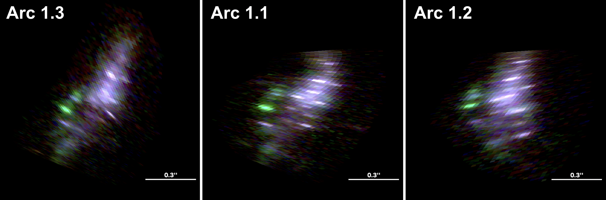

Research
My current research involves constructing strong lens mass models of galaxy clusters as part of the JWST LEGGOS and SLICE collaborations. These models allow us to investigate both the lensing clusters themselves and the background sources they magnify.
Strong lens models constrain the total mass distribution of galaxy clusters, including their dark matter, helping us understand the largest gravitationally bound structures in the universe. By comparing these mass distributions with the visible matter, we can investigate how clusters assemble and evolve and test predictions for the distribution of dark matter. The same models allow us to reconstruct distant galaxies magnified by the clusters, enabling detailed studies of star formation and galaxy evolution during cosmic noon, when the universe's star formation activity was at its peak.
Current Work
JWST LEGGOS
The LEGGOS survey (LEnsing and Galaxy Growth: Observing Substructures) uses gravitational lensing and JWST observations to study star formation in the luminous clumps of highly magnified galaxies at cosmic noon.
I contribute to the construction of strong lens mass models using JWST imaging and spectroscopy alongside archival Hubble Space Telescope imaging. These well-constrained models provide the magnification estimates and source-plane reconstructions needed to measure the intrinsic sizes, luminosities, and spatial distribution of star-forming regions in the lensed galaxies.
JWST SLICE
The SLICE collaboration (Strong LensIng and Cluster Evolution) aims to trace the co-evolution of the luminous, baryonic matter and dark matter in massive galaxy clusters across approximately eight billion years of cosmic time, spanning redshifts from z ≈ 0.2 to z = 1.9.
I help construct strong lens mass models using JWST and archival Hubble imaging, together with MUSE spectroscopy to measure the redshifts of cluster members and lensed arcs. These observations constrain the clusters' mass distributions and contribute to the collaboration's broader effort to understand how their dark and luminous components evolve.
Wide-Separation Lensed Quasars
I also contribute to a separate project constructing strong lens mass models of systems with wide-separation lensed quasars. Because quasars vary in brightness, the same variation appears at different times in their multiple images as the light travels along different paths through the lensing cluster.
Combining these measured time delays with predictions from well-constrained lens models allows us to constrain the Hubble constant, H0, which describes the present-day expansion rate of the universe. My work helps characterize the lensing mass distribution and improve the model predictions needed for these measurements.
Notable Results
A Strong Lens Model of SDSS J1110+6459
As part of LEGGOS, I developed an updated strong lens model of SDSS J1110+6459, a galaxy cluster at z = 0.659 that lenses the star-forming galaxy SGAS J1110 at z = 2.481 into three images forming a giant arc.
Using JWST NIRCam imaging, NIRSpec spectroscopy, and archival Hubble observations, we identified four multiply imaged background sources and matched more than 20 luminous regions across the primary arc. Spectroscopy also confirmed that previously ambiguous structures along the edge of the arc belong to the same background galaxy.

The resulting model reproduces the observed image positions with an image-plane RMS of 0.11 arcseconds and gives a total effective areal magnification of approximately 24.2 for the giant arc. The dense set of resolved clump constraints improves magnification precision by approximately 2.6–8.3 times over previous models. We also estimate a systematic uncertainty of approximately 10%.
Tracing the three lensed images back through the model produces consistent source-plane reconstructions of the background galaxy. This lensing solution provides the foundation for subsequent studies of its star-forming structures, allowing observed sizes and brightnesses to be translated into intrinsic physical properties.
